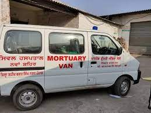

ICARE
ICARE
 Types Of Ambulence
Basic Life Support Ambulence
Types Of Ambulence
Basic Life Support Ambulence
Vehicle equipped with IV supplies, patient bed, stretcher, BP monitor, oxygen delivery devices.
Suitable for patients not in moderate condition but require instant medical transportation.
Book Now
Call Us
Advance Life Support Ambulence
Vehicle equipped with ECG, ventilator, incubator, defibrillators, nebulizer, IV supplies,
oxygen delivery services, BP device, monitoring and various other advanced life supporting supplies.
A paramedic or doctor is always available.
oxygen delivery services, BP device, monitoring and various other advanced life supporting supplies.
A paramedic or doctor is always available.
Book Now
Call Us
Patient Transport Ambulence
Vehicle equipped with patient bed and other minor life-supporting devices.
Suitable for patients who are presumably not in critical condition, but simply require mobility assistance to a medical facility.
Book Now
Call Us
COVID-19 Special Ambulence
Vehicle equipped with patient bed and Oxygen Cylinder.
Suitable for patients who are affected in COVID-19.A paramedic or doctor is always available.
Book Now
Call Us

Mortuary Ambulence
Vehicle equipped with bed, scoop stretchers, and an attendant.
Mortuary ambulance services are mainly used to transport dead bodies.
Book Now
Call Us
Complain1800-321-5586
EmailICARE.services@gmail.com